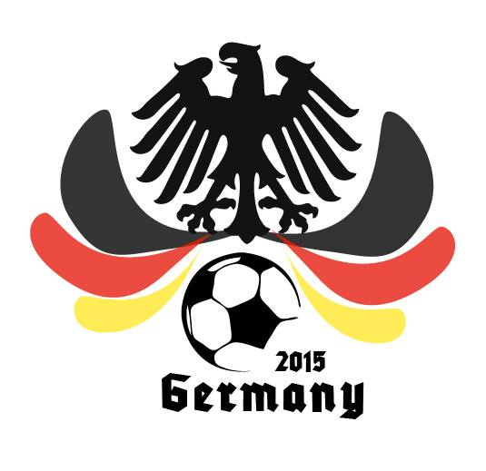
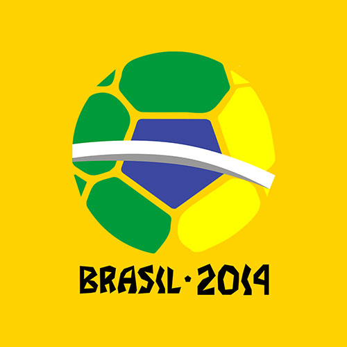
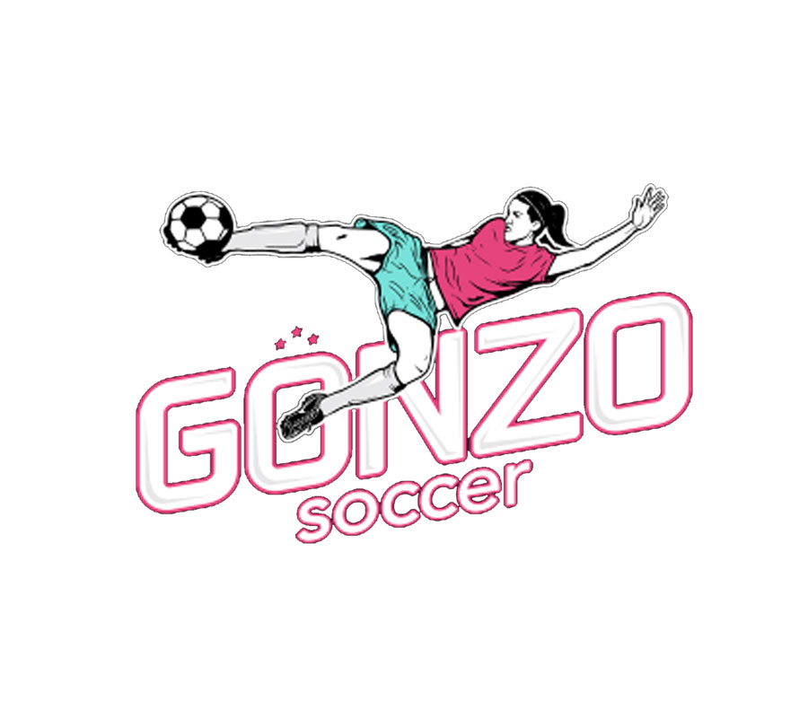

For the first time we'll be having a Women's World Cup consisting of 8 teams, in addition to the World Cup with 32 teams!
Since its inception in 2010, NU World Cup has been bringing the Northwestern community together through the shared love for the game of soccer. Working towards an even more inclusive and diverse NU family, we organize events throughout the year to help our philanthropy and promote our main event - the Northwestern World Cup.
Throughout the year, our six committees put together events such as the FIFA and Futsal tournaments, Human Foosball and fundraisers for our philanthropy.
The Northwestern World Cup is a 3-day event, based on the format of the actual FIFA World Cup, organized at the Lakeside Field. With 32 teams and over 500 participating players, Northwestern World Cup is the largest student run athletic event on Northwestern’s campus.
Initially starting off as ISA World Cup in 2010, NU World Cup has been an independent organization since 2012. At the end of just our first year as an organization, we received the 2013 Wildcat Excellence Award for Outstanding Undergraduate Student Organization.
As we continue to grow and expand each year, we strive for an even more united Northwestern community. None of this would be possible without our committee members, sponsors and members of the Northwestern community who have all given NU World Cup the love and support to transform us into the organization we are today!
In May 2009, Gonzo Soccer’s soon-to-be co-founders Monica Gonzalez and Alyse LaHue held a soccer clinic for Latino girls at Chitown Futbol in Chicago’s inner city. Monica, former captain of the Mexican National team and Alyse, then-marketing director of the Chicago Red Stars women’s professional team, were a formidable coaching pair and the soccer clinic was a huge success — so much so that the owner of Chitown Futbol asked them to come back and teach another one.
Gonzo Soccer began very much by accident, but its formation was a matter of supply and demand. The girls of inner city Chicago needed a place to play. It wasn’t long, however, before Monica and Alyse realized that these girls needed much more than just soccer lessons, they needed academic support and the tools necessary to help them react to everyday risks of urban living.
As a result, Gonzo Soccer has become so much more than just a soccer club for girls. Today, it is a place for them to learn life skills that will help them stay in school and out of trouble, a place for them to get the academic support they need.
It is a place they belong.